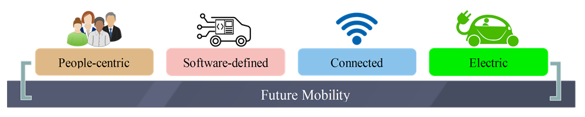
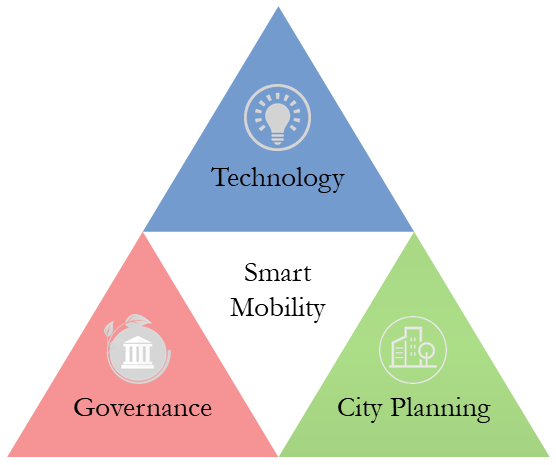
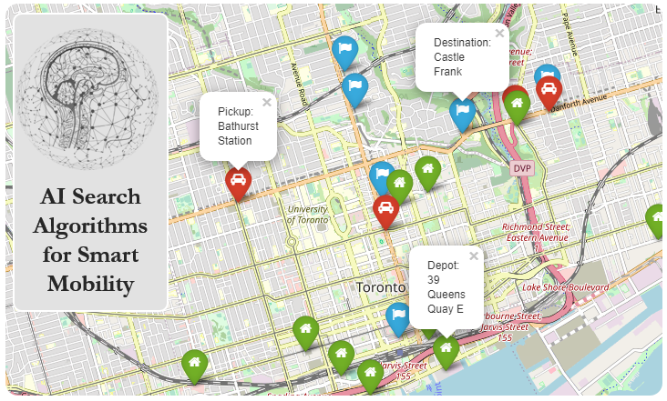

Books & Publications Hubs
Two published books, an open-source Jupyter book and a Medium publication on AI for smart mobility.
Optimization Algorithms: AI techniques for design, planning, and control problems
September 24, 2024
Optimization problems are ubiquitous in different aspects of life. Have you ever wondered how navigation apps find the fastest route from one place to another, how ridesharing/ridehailing apps direct drivers to hotspot regions to minimize wait time, how emergency vehicles are dispatched and routed to efficiently respond to incidents, and how new locations for electric vehicle charging stations are selected? Optimization Algorithms introduces the AI algorithms that can solve these complex and poorly-structured problems. Inside you’ll find a wide range of optimization methods, from deterministic and stochastic derivative-free optimization to nature-inspired search algorithms and machine learning methods.

This book is written for practitioners interested in solving ill-structured search and optimization problems using modern derivative-free algorithms.
This book will get you up to speed with the core concepts of search and optimization and endow you with the ability to deal with practical design, planning and control problems. Without assuming any prior knowledge of search and optimization and with an intermediate knowledge of data structures and Python, this book has been written to take most anyone from never solving search and optimization problems to being a well-rounded search and optimization practitioner able to select, implement and adapt the right solver for the right problem. This book grew out of several courses related to search and optimization taught by me at different universities and training centers in industry. My 25 years working as an AI and Robotics professor in the academia and as a technical leader in industry have given me a wealth of experiences to share with you through this book.
By the end of the book you should understand:
- How to deal with discrete and continuous ill-structured optimization problems using deterministic and stochastic derivative-free search and optimization techniques
- How to apply deterministic graph search algorithms to solve graph problems
- How to apply nature-inspired algorithms to find optimal or near-optimal solutions for practical design, planning and control problems
- How to use machine learning methods to solve search and optimization problems
- How to solve search dilemma by achieving trade-off between search space exploration and exploitation using algorithm parameter adaptation
- How to use state-of-the-art Python libraries related to search and optimization
The book is divided into five parts. Part 1 covers deterministic graph search algorithms. Part 2 will focus on trajectory-based optimization algorithms giving simulated annealing and tabu search as examples. Moving forward, Part 3 introduces evolutionary computing algorithms followed by presenting swarm-intelligence algorithms in Part 4. The last part of the book show how machine learning-based methods can be used to solve complex search and optimization problems.
Throughout this book, wealth of examples and in-depth case studies written in Python are provided for both novices and experts. Optimization Algorithms: AI techniques for design, planning, and control problems is now available for early access.
Smart Mobility: Exploring Foundational Technologies and Wider Impacts
May 23, 2021
Nowadays, we are witnessing several paradigm shifts in mobility systems and services. Cities are decarbonizing the transportation sector and are moving from car-centric mobility to multimodal mobility; from restricted mobility in two-dimensional streets to 3D mobility; from rigid schedule mobility to mobility on demand and on an as-needed basis and from fragmented unconnected mobility to seamless integrated mobility. Mobility companies move from manufacturing and trade economy to service economy or servitization such as Mobility-as-a-Service (MaaS) and from the unsustainable “number of vehicles sold”’-based revenue model to vehicle miles traveled (VMT)-based, infonomics-based data and customer experience monetization and passenger economy-based revenue models. Delivery service providers move from conventional slow, rigid and non-transparent last-mile delivery to fast, elastic and transparent last-mile delivery services. People move from ownership to usership and from passive mobility to active and zero-impact mobility. Different foundational technologies, technology enablers and mobility disruptors are behind these paradigm shifts.

According to Mobility 2040 report, the rewards of unlocking smart mobility could be vast, as this market is expected to generate 270 billion in revenues and profits of $125 billion to $150 billion by 2040. According to Reportlinker, the Global Smart Mobility Market size is expected to reach $91 billion by 2026, rising at a market growth of 18.4% CAGR during the forecast period.
In his book “Profiles of the Future: An Inquiry into the Limits of the Possible”, the English science-fiction writer and inventor Arthur Clarke formulated his famous Three Laws, of which the third law is the best-known and most widely cited:
“any sufficiently advanced technology is indistinguishable from magic”.
Connected mobility technology is the magic that creates new data-rich environments and enables many applications and services that will make our roads safer, less congested, and eco-friendlier. Shared mobility is the magic that replaces ownership by usership. Mobility-as-a-Service (MaaS), Mobility on Demand (MoD) and Seamless Integrated Mobility Systems (SIMS) are the magic that enables seamless mobility as the neo-liberalization of people and goods transportation.
Self-driving technology is the magic that will dramatically reduce injuries and fatalities, improves access to mobility for those who currently cannot drive due to age or disability and opens the doors to passenger economy.
3D mobility is the magic that moves us from restricted mobility in two-dimensional streets that enables only 2-DOF (lateral and longitudinal motion) to 3-DOF mobility (lateral, longitudinal and vertical motion) or more accurately 6-DOF (lateral, longitudinal, vertical, roll, pitch, and yaw) considering the rotational movements of the aerial platform.
Zero-emission Hyperloop technology is the magic that will take you from Los Angeles to San Francisco in just 35 minutes instead of 2.5 hours in high-speed rail system.
Electrification is the magic that will enables net zero emission and sustainable mobility in the near future.
The future mobility is people-centric, software defined, connected and electric. With people-centric mobility, quality of life in the cities will be improved. Software algorithms play crucial roles in enabling advanced assisted driving and automated driving vehicles, shared mobility services, mobility as a service, mobility on demand and seamless integrated mobility. Automated mobility will reduce injuries and fatalities, improves access to mobility for elderly and physically challenged individuals and will create new business models such as passenger economy. Shared mobility relies on sharing economy business model that replaces ownership by usership. Connected mobility enables different safety and infotainment services like real-time navigation and routing, traffic information, safety warnings, accident avoidance, advanced driver-assistance and automated driving systems. Electrification is a key enabler for decarbonized sustainable mobility.

In spite of recent rapid development, smart mobility is still in its infancy. The widespread and the social acceptance of smart mobility technologies like automated driving will depend not only on the maturity of the technology but also on the availability of a well-developed governance framework and the proper city planning to accommodate these evolving technologies. This means that smart mobility depends on a triad of complementary factors, namely: technology, governance and city planning. The three components of this smart mobility triad are not separate components as they impact each other.

There is a growing need to use different foundational technologies, technology enablers and disruptors to enhance the relationship between customers and mobility providers and to achieve affordable, inclusive and seamless integration between different mobility services.
The legal and regulatory environment around several smart mobility technologies need to be well developed taking into consideration opinions and concerns of different stakeholders.
Moreover, evolutionary and revolutionary changes in the city planning should be considered to accommodate the emerging services of smart mobility. My book titled "Smart Mobility: Exploring Foundational Technologies and Wider Impacts" gives a holistic view of smart mobility systems and services and covers how the smart mobility triad (technology, governance, and city planning) work together to create a smart and sustainable mobility.
The book describes foundational technologies, technology enablers and disruptors of smart mobility. Position, Navigation, and Timing (PNT), Geographic Information System (GIS), wireless communication, mobile cloud computing, blockchain, Internet of Things (IoT), Artificial Intelligence (AI), robotics, and electrification are covered as examples of foundational technologies for smart mobility systems and services. The book discusses several technology enablers for smart mobility such as intelligent infrastructure, connected mobility, automated mobility, E-Mobility, micro-mobility, active/soft mobility, inclusive mobility and Context Awareness Systems (CAS). The book also sheds lights on potential smart mobility disruptors such as disruptive mobility platforms (autonomous grounds vehicles, urban air mobility, river taxis, automated people movers, hyperloop and urbanloop), shared mobility, MaaS, MoD, SIMS, last-mile delivery, gig economy and passenger economy. Market size of these technologies, their potential growth and eco-socio-economic implications are highlighted in this book. Impacts of COVID-19 pandemic on consumer behaviors and preferences and the expected short-term disruptions and longer-term structural changes in different aspects of mobility systems specially in micromobility, shared mobility, public transit and contactless last-mile delivery services are also discussed. The book will be published by Apress (Springer Nature) in June 2021.
AI Search Algorithms for Smart Mobility
April 15, 2020
AI Search Algorithms for Smart Mobility is an open-source Jupyter book developed from the materials of the course I created and teach at the University of Toronto.

This open-source book features several case studies demonstrating the capability of AI search algorithms in solving optimization problems related to people mobility, logistics, and infrastructure. Python implementations are provided in the form of Jupyter notebooks, which are available through the book’s website and on GitHub.
AI Search Algorithms for Smart Mobility is primarily a project-oriented, practical book designed for academic institutions, continuing education programs, training centers, and professionals in the field. It caters to a broad audience, including university students, researchers, engineers in mobility companies, and city planners.
AI for Smart Mobility
August 30, 2023
AI for Smart Mobility is a Medium publication initiated as a collective hub exploring AI’s transformation of transportation infrastructure, people mobility and logistics
A Medium publication for sharing concepts, ideas, projects and codes related to AI for smart mobility systems and services.
This publication contains easy-to-read articles showing AI’s roles in transportation infrastructures, people mobility and logistics.